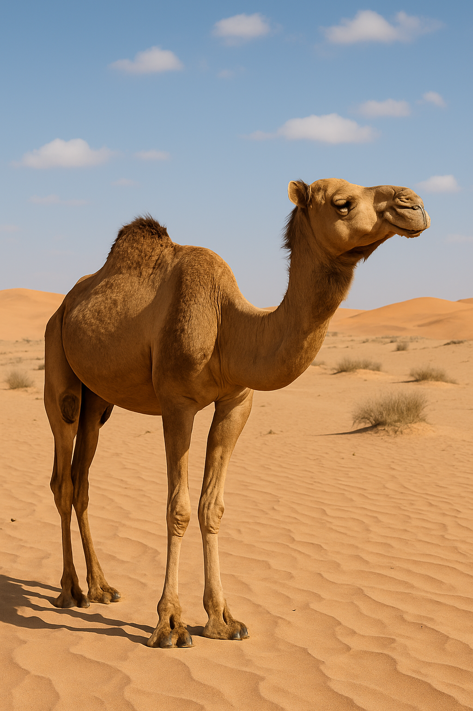

A Cultural Journey Across India
By Suyash Saxena, Class 7, Roll Number 43, 2025-26 Batch
“India is a mosaic of cultures, where every journey is a celebration of diversity.”
1: Rajasthan – Land of Deserts and Dance
Our journey begins in vibrant Rajasthan, famous for its golden deserts, majestic forts, and the mesmerizing Kalbeliya folk dance. The hot, dry climate means people wear cotton clothes and enjoy spicy food. I explored traditional crafts, watched a puppet show, and admired colorful turbans everywhere!
Art: I tried sketching a camel and people performing the Kalbeliya dance.

2: Punjab – The Land of Five Rivers
Next stop: Punjab, the land of five rivers! Here, I visited the splendid Golden Temple and witnessed energetic Bhangra and Gidda dances during the lively Lohri festival. Fields of wheat stretched as far as the eye could see, and the food—like sarson ka saag and makki di roti—was simply delicious.
Art: I drew a dhol (drum), symbolizing Punjab’s vibrant music.

3: Uttar Pradesh – A Blend of Heritage
Our virtual train took us to Uttar Pradesh, home to the magnificent Taj Mahal and the spiritual Kumbh Mela. I learned about Kathak, the state’s graceful classical dance, and savored sweets like peda. The Ganga River and the mix of festivals made UP truly special.
Art: My sketch of the Taj Mahal turned out to be my favorite!

4: West Bengal – Sweetness and Sights
From UP, we traveled east to West Bengal, a state that comes alive during Durga Puja. The air was filled with the aroma of rasgulla, and I loved the rice-based cuisine. The lush greenery of Darjeeling and the vast Sunderbans showed the rich natural beauty here.
Art: I sketched a bowl of rasgullas and imagined the cultural parades.

5: Assam – Tea Gardens and Wildlife
Finally, we arrived in Assam, famous for its endless tea gardens and wildlife in Kaziranga National Park. I enjoyed the sounds of Bihu dance and the sight of bamboo houses. Heavy rain here means lush greenery everywhere!
Art: I drew the beautiful tea gardens and a cup of Assam tea.

Math on the Move
To plan my journey, I calculated distances between each state:
- Rajasthan → Punjab: 500 km
- Punjab → UP: 800 km
- UP → West Bengal: 1200 km
- West Bengal → Assam: 500 km
- Assam → Rajasthan: 2300 km
Total Distance: 5300 km
If the train speed is 80 km/hr, it would take about 66 hours to cover the whole journey!
Total travel cost: Rs. 5300 (at Rs. 1/km). If food and stay cost Rs. 400 per day, for 10 days it’s Rs. 4000 more.
Science and Culture
I observed how geography and climate shape each state’s way of life—from Rajasthan’s desert homes to Assam’s bamboo houses, and from Punjab’s wheat fields to Bengal’s rice paddies.
Conclusion
This virtual journey across five Indian states showed me how diverse and beautiful our country is—from the deserts of Rajasthan to the tea gardens of Assam. Every state offers something unique in food, dance, festivals, and lifestyle.
India truly is a land of unity in diversity!